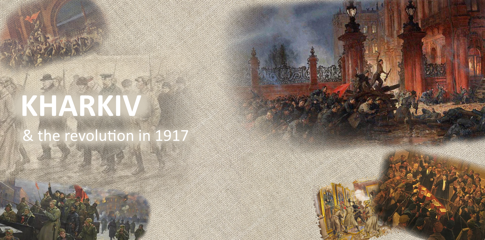
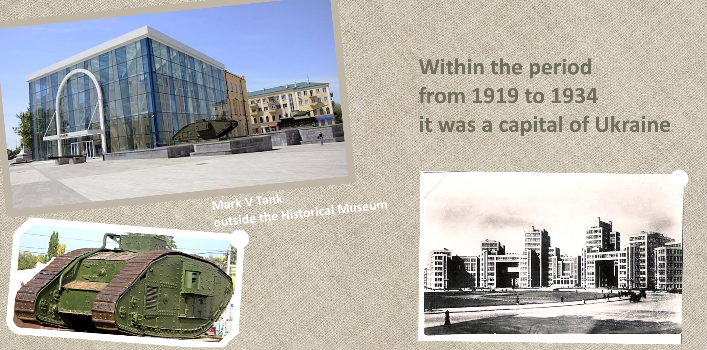
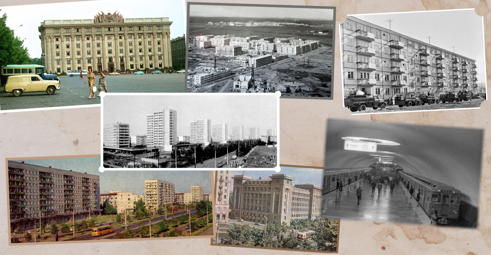
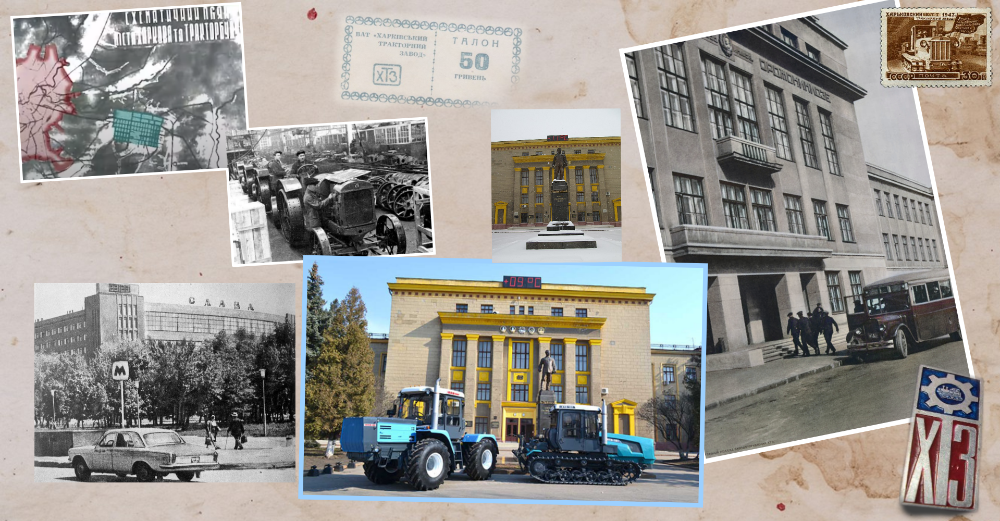

Geography
Kharkiv
second largest city in Ukraine
a population of over 1.5 million inhabitants


History
1772—1914: Lviv as a part of Austro-Hungarian Empire
1914—1919: Lviv in the First World War

History
1919—1939: Lviv as a part of Poland

History
1938: Lviv was still as a part of Poland

History
1939 - 1991: Lviv as a part of USSR

History
Union of Soviet Socialist Republics (USSR)

History
What is going on now ...



